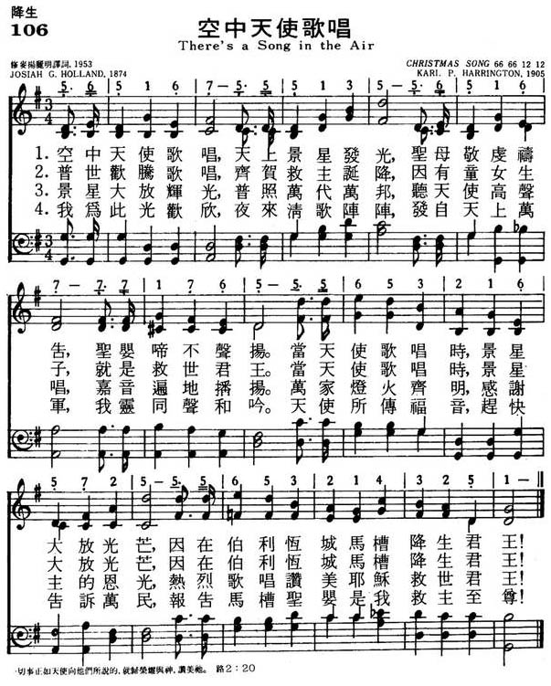
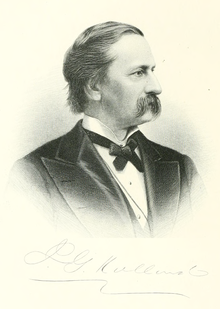

|
|
|
|
1 There's a song in the air! 2 There's a tumult of joy 3 In the light of that star 4 We rejoice in the light, United Methodist Hymnal, 1989 |
106空中天使歌唱
1.空中天使歌唱，天上景星发光,
圣母敬虔祷告，圣婴啼不扬声。 当天使歌唱时,景星大发光芒, 因在伯利��马槽降生君王！ 2.普世欢腾歌唱,齐贺救主诞降, 因有童女生子,就是救主君王。 当天使歌唱时,景星大发光芒, 因在伯利��马槽降生君王！ 3.景星大发辉光，普照万世万邦, 听天使高声唱,嘉音遍地播扬。 万家灯火齐明,感谢主的恩光, 热烈歌唱赞美耶稣救世君王! 4.我为此光欢欣，夜来清歌阵阵, 发自天上万军，我灵同声和吟. 天使所传福音,赶快告诉万民, 报告马槽圣婴是我救主至尊！ |
|
https://www.mred365.cn/szxg/7109.html
 |
|
|
|
|

https://www.youtube.com/watch?v=9fBk5H2Pkhs -
Cedarmont Kids - There's a Song in the Air https://www.youtube.com/watch?v=pzsgb7bF4Hs
第72首 君王诞生歌 There’s a song in the air _J.G.Ho1land
经文：“他名称为奇妙、策士、全能的神、永在的父、和平的君“(赛9：6)。
《君王诞生歌》的作者霍兰(J.G.Ho1land，1819,一1881)是美国报刊编者，出身农民家庭，青年时学医，学成后曾在美国麻州春田地方行医数年，以后转到报刊从事文字方面工作。先在春田共和党人报社工作，后与同人组织成立斯克里布纳杂志(Scribner’s Magazine)，1870年起自任编辑。由于他系统写稿，并出版人物传记如《林肯传》(1865)等书，声名鹊起，成为当代颇有名气的作家．
1879年霍兰出版他的《诗文全集》，这首诗初见于这本诗集中，原名为《圣诞颂歌(CHRISTMAS CAROL)》。按圣诞颂歌的英文原词为Carol，当初是欧洲人伴随舞蹈而唱的歌曲，曲调活泼，不重修饰。后来又进入教堂作为节令的颂歌，去掉了舞蹈。最后则用以专指圣诞节用的歌曲。《君王诞生歌》是较早采用“圣诞颂歌”这一词汇的。这首诗词句十分精炼简洁、通俗易懂。
曲调乃美国教育家及音乐家哈林顿(K．P.Harrington，1861一1953)所谱。哈氏历任好几所大学的拉丁文教授，业余从事音乐和唱诗班工作。他终身以音乐为乐，著有《教会音乐教育》一书(1931年出版)和乐谱多册，身后还留有若干未及出版的乐谱。
这首诗早已流传到我国教会。1982年杨旅复(简历参阅第11O首)同工重新译词，使更见流畅。
曲调名为《圣诞颂(CHRISTMAS SONG)》。
在普世欢庆的圣诞节时，很多人爱唱这首《君王诞生歌》，它不但点缀了节日气氛，也使唱者更加从心中感谢那位马槽内安放着的君王一救主基督。
1) Carol，圣诞颂歌，在我国报纸上有时按英文译音为“凯乐尔”。见1986年12月25日上海《新民晚报》：《圣诞歌曲杂谈》。
LX1816
There'S A Song In The
Air
106空中天使歌唱
颂新
从圣经中，从人类历史中，我们看见每一个时代只有越来越坏，人心越来越诡诈，坏到极处，罪恶越来越增多。世人絶对没有办法拯救自己。全世界的人都生活在罪恶死亡中。
神并没有要人受苦，神也不愿意人生活在罪恶死亡之中。要使人能脱离罪的捆锁，唯一的救法，是神差祂的独生子降生。当日，天使论到耶稣的降生说：「祂要将自
己的百姓从罪恶里救出来」（太
1:21）。圣诞节的中心信息，是耶稣基督到世上来，借着祂的受死和复活，胜过了罪恶，败坏了死亡的权势，将人从罪恶中拯救出来。人因着神儿子的救赎，过
犯得以赦免，与神和好，并且「得称得神的儿女」，何等大的福份！感谢主，祂将天上的平安带到世人中间。
本诗作者 Josiah G. Holland 1819 年 7 月 14 日生于美国麻州 Belchertown
。他原是念药剂的，毕业后只实习了一个短期，便放弃药剂工作，而投入写作。自办杂志，但仅维持了六个月即关闭。后来被聘为春田市报纸主笔，才一举成名。从
此大展鸿图，他所主编的 Scribner Magazine 也很著名。
这首「空中天使歌唱」 1874 年首次刊印于主日学校专辑内。 1881 年 10 月 12
日逝世于纽约。本诗以描写基督的诞生开始，以信徒对基督的诞生之反应作结束。第 1 ， 2 节强调基督降生这件事实，第 3 、 4
节写这事实的效果。目前所用的曲调作者为 Karl P. Harrington ，是一位杰出的拉丁文教授、作曲家、风琴师及诗班指挥。在他 84
岁高龄时，仍是一位活跃的教会风琴师及诗班指挥。
There's a Song in the Air
| There's a Song in the Air | |
|---|---|
| by Josiah G. Holland | |
|
 |
|
| Genre | Christmas carol |
| Written | 1872 |
| Based on | Luke 2:7 |
| Meter | 6.6.6.6.12.12 |
| Melody | "Christmas Song" by Karl P. Harrington |
{kind=link}
There's a Song in the Air is a Christmas carol and United Methodist Church hymn.
History[edit]
In the summer of 1904, Karl P. Harrington was assembling the new Methodist Hymnal. He went through hundreds of familiar hymns from a range of hymnals and songbooks. It was his job to comb through the offerings and select the songs that would line the pews. As Ace Collins says in Stories Behind the Best-Loved Songs of Christmas, "That meant he had to include music that could be sung by huge church choirs in places like Boston and by tiny congregations in places like Salem, Arkansas. Every pastor and song leader would be depending upon the songs included; other than the Bible itself, his project would be the most important tool found in most churches." He was up to the task. He was a skilled organist. He had studied music around the globe, written numerous hymns, and was a Wesleyan University music professor. Despite his gifts it was still a daunting task. To relax he would read the poetry of American poet and novelist Josiah Holland. Josiah was the founder of Scribner's magazine. He wrote the poem for an 1874 Sunday School Journal and was reprinted that year in Complete Poetry Writings. This was the book that Harrington was flipping through in the midst of his editing the new hymnal. He came across this Christmas poem and decided it should be set to music. Collins says, "Going over to the organ, Harrington again studied the words to 'There's a Song in the Air'. This time he read them aloud, forming a tune around each phrase. As his fingers touched the keyboard, a melody came to life." In 1905, in The Methodist Hymnal the words and music become one and were sent to churches around the globe.
History of Hymns: "There's a Song in the Air"
“There’s a Song in the Air”
Josiah G. Holland
UM Hymnal, No. 249
There’s a song in the air!
There’s a star in the sky!
There’s a mother’s deep prayer
and a baby’s low cry!
And the star rains its fire while the beautiful sing,
for the manger of Bethlehem cradles a King!
There is something captivating about this simple Christmas hymn with its almost childlike wonder. The first stanza is a series of declarative statements that invite the singer to marvel at Christ’s birth as if we were physically present at the event.
Our attention is first drawn to the heavens. We hear this song—the song of the angels singing “Glory to God in the highest, and peace on earth” (Luke 2:14). We see the star—the one that guided the magi in Matthew 2. Then we refocus our attention to the scene immediately around us. We see the mother in prayer and hear the cry of an infant. The final line of the opening stanza ties the heavenly and earthly scene together, and the paradox of this vision becomes apparent: Heavenly events are pointing to the most humble of settings in a small, out-of-the-way village—the birth of a King!
Josiah Gilbert Holland (1819-1881) was himself born in a poor, struggling family in Massachusetts. After working in a factory to help the family finances, he went to school, studying at Berkshire Medical College where he graduated in 1844. After attempting to establish a medical practice in western Massachusetts, he gave it up and moved to the south, taking teaching positions first in Richmond, Va., and then in Vicksburg, Miss.
His true calling was fulfilled in 1850 when he returned to Massachusetts to become an editor of the Springfield Republican newspaper, working under the esteemed Samuel Bowles. The essays Holland wrote for this paper under the pseudonym of Timothy Titcomb in the decade before the Civil War established his reputation as a writer. He published a historical novel, Bay Path (1857), and a collection of essays, Titcomb’s Letters to Young People, Single and Married (1858).
When Bowles took an extended trip to Europe in 1862, Holland became editor-in-chief. After the Civil War, he reduced his duties at the newspaper and wrote a series of popular novels.
In 1868 Holland took his own trip to Europe, where he met Roswell Smith. Together they laid plans to publish a magazine with Charles Scribner. The famous Scribner’s Monthly published its first issue in 1870. Josiah Holland was the editor of this literary journal.
The final decade of his life was also his most productive, with three novels and three books of poetry. He died in New York City at age 62. Though immensely popular during his day—his published works sold more than half a million copies—he is remembered primarily as an editor.
As editor of Scribner’s Monthly, Holland had contact with some of the leading literary figures of his day, including Mark Twain. Of note was the extensive correspondence that Holland and his wife maintained with the poet Emily Dickinson. Holland’s wife, Elizabeth, seems to have played a role in encouraging Dickinson’s poetry.
Our Christmas hymn dates from the last decade of Holland’s life in 1872. It appeared first in The Brilliant (1874), a collection of Sunday school songs edited by W.T. Giffe.
Returning to the hymn, the three final stanzas continue with graphic phrases that appeal to eye and ear, as Holland more fully unfolds the scene at the birth of Christ. The third stanza exemplifies 19th-century American romantic poetry at its full flower:
In the light of that star
lie the ages impearled;
and that song from afar
has swept over the world.
Every hearth is aflame, and the beautiful sing
in the homes of the nations that Jesus is King!
It is tempting to compare this Christmas hymn with two others from this era. The first is “I Heard the Bells on Christmas Day” by Holland’s contemporary, Henry Wadsworth Longfellow (1807-1882). Living during the same decades in the same region of the country, Wadsworth draws heavily in his hymn from the events of the Civil War in 1864 and despairs at the lack of peace on earth. Holland’s hymn, only eight years later, forgoes even a perfunctory reference to peace in favor of what some might see today as an over-romanticizing of the Christmas narrative.
Unitarian minister Edmund Sears (1810-1876) also was a contemporary of Holland, ministering in Massachusetts. “It Came Upon the Midnight Clear” was written in 1849 during the gathering storms of the Civil War. While not as disheartening in spirit as Longfellow’s hymn, Sears pleas for peace as well.
These comparisons, perhaps, show us the need for balance between expressions of wonder and awe at the mystery of the Incarnation, and the realization that the imperative of the angels for “peace on earth” is far from a reality, over 2000 years later.
Dr. Hawn is professor of sacred music at Perkins School of Theology.
Words: Josiah Gilbert Holland (b. July 24, 1819; d. Oct.
12, 1881)
Music: Christmas Song, by Karl Pomeroy Harrington (b. June
13, 1861; d. Nov. 14, 1953)
Links:
Wordwise Hymns (none)
The Cyber
Hymnal
Note: Though the poem was written a couple of years before, Holland’s words first appeared in print as a Christmas hymn in 1874. There were several musical settings of it, until Harrington wrote Christmas Song in 1904. That has become the traditional tune.
Now there were in the same country [near Bethlehem] shepherds living out in the fields, keeping watch over their flock by night. And behold, an angel of the Lord stood before them, and the glory of the Lord shone around them, and they were greatly afraid. Then the angel said to them, “Do not be afraid, for behold, I bring you good tidings of great joy which will be to all people. For there is born to you this day in the city of David a Saviour, who is Christ the Lord. And this will be the sign to you: You will find a Babe wrapped in swaddling cloths, lying in a manger.” And suddenly there was with the angel a multitude of the heavenly host praising God and saying: “Glory to God in the highest, And on earth peace, goodwill toward men!” So it was, when the angels had gone away from them into heaven, that the shepherds said to one another, “Let us now go to Bethlehem and see this thing that has come to pass, which the Lord has made known to us.” And they came with haste and found Mary and Joseph, and the Babe lying in a manger….Then the shepherds returned, glorifying and praising God for all the things that they had heard and seen, as it was told them. (Lk. 2:8-16, 20)
Skillful writers, using sanctified imagination, have sometimes caught the atmosphere of these scenes in ways that help us to feel what it was like. One of these is Josiah Holland. Dr. Holland trained as a physician, and practised medicine for awhile. But he soon moved on to what was to be the calling best suiting his abilities. He became an author and editor. Gilbert Holland wrote a humorous newspaper column, as well as novels, and poetry. It is one of his poems, written in 1874 for a Sunday School journal, that captures something of the wonder of the first Christmas.
Thirty years later, Karl Harrington, read Holland’s poem in an idle moment while vacationing at his summer cottage. He was moved by the simple yet descriptive words. And Harrington wrote the fine tune we now use to sing the beautiful carol.
CH-1) There’s a song in the air! There’s a star in the sky!
There’s a mother’s deep prayer and a Baby’s low cry!
And the star rains its fire while the beautiful sing,
For the manger of Bethlehem cradles a King!
What of that night in the fields of Bethlehem, when an angel appeared to some shepherds tending their sheep? Have you ever seen an angel, and had “the glory of the Lord [shine] around [you]”? We are told the men were “greatly afraid,” and likely we would be too! And what was in their minds and hearts when they found the angelic announcement to be true, when they shared the good news with others, praising God for what had happened (vs. 17, 20)?
CH-2) There’s a tumult of joy o’er the wonderful birth,
For the virgin’s sweet Boy is the Lord of the earth.
Ay! the star rains its fire while the beautiful sing,
For the manger of Bethlehem cradles a King!
The author describes the result in the hearts of those who welcomed the birth of Jesus as a “tumult of joy.” And the dictionary tells us that the word “tumult” describes both an emotional disturbance and a noisy commotion. An inward and outward agitation. No wonder. Something amazing and unprecedented had happened.
¤ Though it was known to only a few at the time, the Lord Jesus was virgin-born (Isa. 7:14; Matt. 1:21-23). The incarnation was a unique supernatural work of the Spirit of God (Lk. 1:35).
¤ Also, both the Old Testament and the New assure us that this One was born to be King, born to rule (Isa. 9:6-7; Matt. 2:1-2; Lk. 1:31-33; I Tim. 6:14-15).
¤ To the latter point must be added the fact that Christ was not born with the luxurious surroundings and pageantry usually accompanying a royal birth. His cradle was a humble manger (Lk. 2:7; cf. II Cor. 8:9).
¤ The mission of Christ was spelled out before His birth. He would “save His people from their sins” (Matt. 1:21). The Lord Himself reiterated that, “the Son of Man did not come to be served, but to serve, and to give His life a ransom for many” (Mk. 10:45).
“The Father has sent the Son as Saviour of the world” (I Jn. 4:14). No wonder His birth was accompanied by an angelic announcement and exclamations of praise from the heavenly host (called “the beautiful” and “the heavenly throng” in the carol). Josiah Holland follows the traditional belief that the angels sang their praises. That is quite possible, though the Bible doesn’t make it clear.
Of the third stanza, Carlton Young writes in Companion to the United Methodist Hymnal (p. 648):
“Stanza 3 reflects the optimism of early social gospel hymns that heralded the emerging twentieth century as the Christian century and the fulfilment of Jesus’ great commission.”
If that is what Holland had in mind, it certainly has not turned out that way. We’ve had a century of almost continual conflict, and “evil men and imposters [or deceivers] grow worse and worse” (II Tim. 3:13). Nevertheless, God is still on the throne, and the work of proclaiming the gospel of grace continues to bear fruit “in the homes of the nations.”
CH- 3) In the light of that star lie the ages impearled;
And that song from afar has swept over the world.
Every hearth is aflame, and the beautiful sing
In the homes of the nations that Jesus is King!
Questions:
1) The Christmas season certainly brings a “tumult” of carnal revelry.
But what can we do to encourage a tumult of joy over the birth of
Christ, in our homes and in our churches?
2) What in your view are the most joyous of our Christmas carols?
Links:
Wordwise Hymns (none)
The Cyber
Hymnal
https://wordwisehymns.com/2013/12/09/theres-a-song-in-the-air/
THERE’S A SONG IN THE AIR hymnstudiesblog
“The Lord of hosts, He is the King of glory” (Ps. 24:10)
INTRO.: A hymn which identifies Jesus as the King of glory who was born of the virgin Mary is “There’s a Song in the Air.” The text was written by Josiah Gilbert Holland who was born on July 24, 1819, at Belchertown, Massachusetts. Holland grew up in a poor family struggling to make ends meet. After a time, Josiah was forced to work in a factory to help the family. He then spent a short time studying at Northampton (Massachusetts) High School before withdrawing due to ill health. Later he studied medicine at Berkshire Medical College, where he took a degree in 1844. Hoping to become a successful physician, he began a medical practice with classmate Dr. Bailey in Springfield, Massachusetts. While trying to establish the practice, he wrote for periodicals such as Knickerbocker Magazine and even tried to publish a newspaper, The Bay State Weekly Courier, but the attempt proved unsuccessful, as did his medical practice. In 1845 he married Elizabeth Luna Chapin. After giving up medicine in 1848, he left western Massachusetts and took a teaching position in Richmond, Virginia, followed by one in 1849 in Vicksburg, Mississippi.
In 1850 Holland returned to western Massachusetts and became an editor of the Springfield Republican newspaper, working with the well known editor Samuel Bowles, where he wrote the column, under the pseudonym Timothy Titcomb, of “Timothy Titcomb Letters.” Many of the essays Holland wrote for the paper in the decade before the Civil War were collected and published in book form, which helped to establish his literary reputation. His first book was a History of Western Massachusetts. He followed in 1857 with an historical novel, Bay Path, and a collection of essays entitled Titcomb’s Letters to Young People, Single and Married in 1858. In 1862, when Samuel Bowles took an extended trip to Europe, Holland temporarily assumed the duties as editor-in-chief of the Springfield Republican. After the Civil War, he reduced his editorial duties and wrote many of his most popular works,
Holland wrote an eloquent eulogy of Abraham Lincoln within days of Lincoln’s death, prompting a commission for a full biography of the late president. He quickly pulled together the lengthy Life of Abraham Lincoln, finished in February 1866, which portrayed Lincoln as an emancipator opposed to slavery. This was followed by the novel Kathrina (1867). In 1868 Holland traveled to Europe, and while there he met Roswell Smith. Together they developed the idea of starting a magazine. When they returned to the United States in 1869, the two men collaborated with Charles Scribner to publish Scribner’s Monthly(afterwards the Century Magazine), in which appeared his novels, and worked there until his death. The first issue was published in 1870 with Holland as editor. These years in New York were also productive for his own literary efforts, and he also found time to write a number of novels and volumes of poetry.
During the 1870s Holland published three novels: Arthur Bonicastle (1873), Sevenoaks (1875), and Nicholas Minturn (1877). His poetry volumes included The Marble Prophecy and Other Poems (1872) which contained “There’s a Song in the Air,” The Mistress and the Manse (1874), and The Puritan’s Guest (1881). Holland died on October 12, 1881, at the age of 62, in New York City, NY, and was buried in Springfield Cemetery in Springfield, Massachusetts. His gravestone includes a bas-relief portrait sculpted by the eminent American 19th-century sculptor, Augustus Saint-Gaudens, and includes the Latin inscription “Et vitam impendere vero” meaning “to devote life to truth.” Although his literary products are rarely read today, during the late nineteenth century they were enormously popular, and more than half a million volumes of Holland’s writings were sold. He is also remembered today for his contributions as an editor, as well as the lyrics to the hymn “There’s a Song in the Air” and several others. Holland and his wife were frequent correspondents and family friends of poet Emily Dickinson.
The most commonly used tune (Christmas Song) for “There’s a Song in the Air” was composed in 1904 by Karl Pomeroy Harrington (1861–1953). So far as I know, the song has never been found in any hymnbook published by members of the Lord’s church for use in Churches of Christ.
The song emphasizes the gladness associated with the birth of Christ.
I. Stanza 1 mentions some events surrounding Jesus’s birth
There’s a song in the air! There’s a star in the sky!
There’s a mother’s deep prayer, And a baby’s low cry!
And the star rains its fire While the beautiful sing,
For the manger of Bethlehem Cradles a King!
A. Some are vehement in their affirmation that nowhere in the Bible does it ever say that angels sang—they only spoke. While that is technically true, some poetic license must be allowed, since we are “SPEAKING to one another in psalms and hymns and spiritual songs, SINGING”: Eph. 5:19; so it is at least within the realm of possibility that the angels spoke their message to the shepherds by singing it
B. The Bible does not say that the shepherds saw any kind of special star, but we do know that a star led the wise men to Christ: Matt. 2:1-9
C. We also know that the mother Mary gave birth to her firstborn son, and that the baby was placed in a manger: Lk. 2:7. The Bible does not specifically say that Mary prayed, but since she was obviously a righteous woman, we would assume that she would have done so. Also, the Bible does not specifically say that the baby Jesus cried, but we know that all babies make some kind of crying noise to make their needs known. Sometimes people wonder about the line in “Away in a Manger” that says, “The little Lord Jesus, no crying He makes.” I understand this simply to express the likely idea that Jesus was not an overly fussy baby who cried constantly.
II. Stanza 2 mentions the joy occasioned by Jesus’ birth
There’s a tumult of joy O’er the wonderful birth,
For the virgin’s sweet boy Is the Lord of the earth.
Ay! the star rains its fire While the beautiful sing,
For the manger of Bethlehem Cradles a King!
A. It certainly was glad tidings of great joy: Lk. 2:9-10
B. It was also a wonderful birth in that Mary was a virgin: Matt. 1:18-23
C. And it was important because the baby is our Savior, Christ the Lord: Lk. 2:11-14
III. Stanza 3 mentions the effect in the world of Jesus’s birth
In the light of that star Lie the ages impearled;
And that song from afar Has swept over the world.
Every hearth is aflame, And the beautiful sing
In the homes of the nations That Jesus is King!
A. The light of that star might be used to symbolize the light of God’s word: Ps. 119:105
B. That song (message of the angels) is still heard through the preaching of the word: 2 Cor. 5:19-20
C. And this word of the gospel has gone over the world: Col. 1:23
IV. Stanza 4 mentions the joy occasioned by Jesus’ birth
We rejoice in the light, And we echo the song
That comes down through the night From the heavenly throng.
Ay! we shout to the lovely Evangel they bring,
And we greet in His cradle Our Savior and King!
A. We can rejoice always in the Lord: Phil. 4:4
B. This is because He is the light of the world: Jn. 8:12
C. We echo the “song” as we spread the Evangel (good news or gospel): Mk. 16:15
CONCL.: I remember hearing, and maybe even singing, this song at school when I was growing up. However, among hymns about the birth of Christ, this one is not nearly as well known as “Hark! The Herald Angels Sing” or “O Come, All Ye Faithful.” Some object to singing nativity songs, probably for fear of others thinking that they are observing Christmas as a religious holiday. But if it is all right to sing hymns about the time of Christ’s death and His resurrection, then there can be nothing wrong about singing a song about the time of His birth when someone may have reported that “There’s a Song in the Air.”